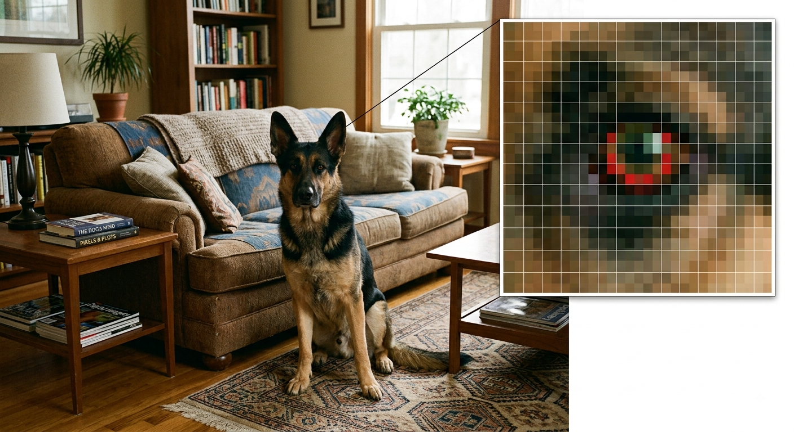
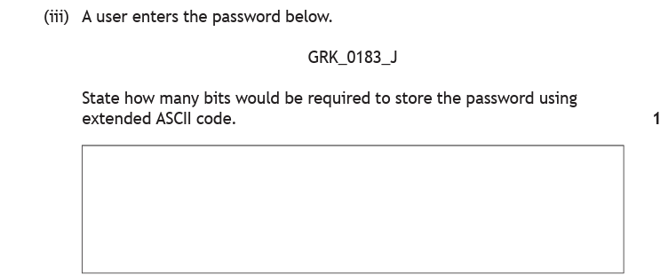
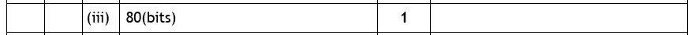
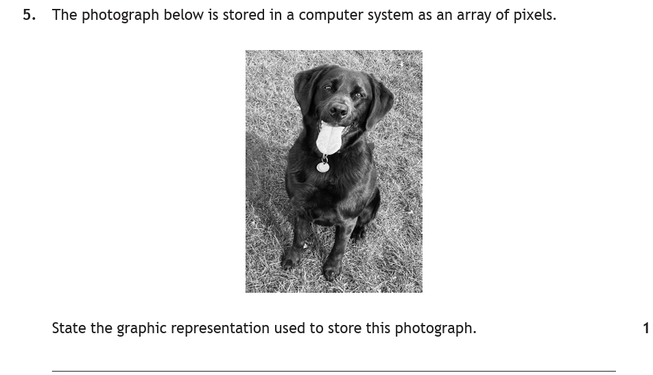
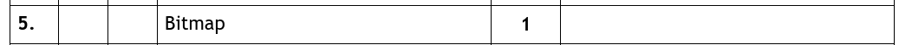
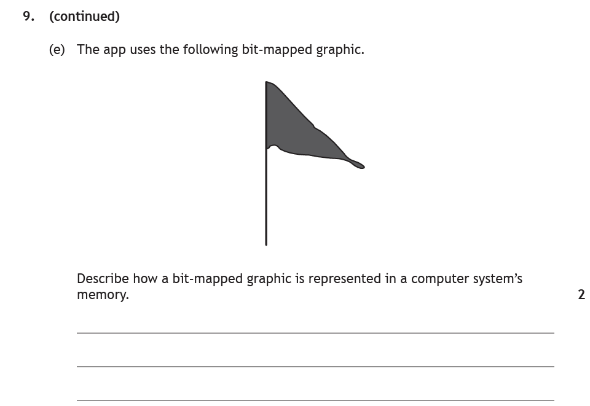
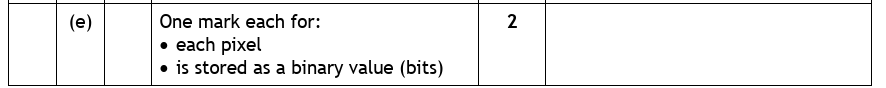
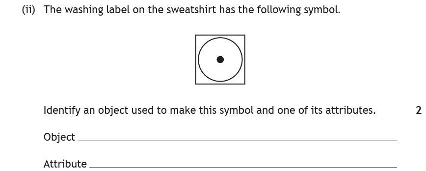
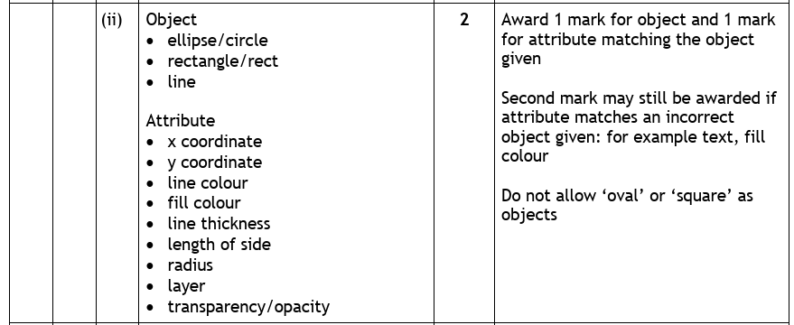

Introduction
Numbers weren't so hard — but how does a machine that only understands 1s and 0s store the letter A? Or a photo of your dog? The answer, both times, is the same trick: turn it into numbers. Text gets a number per character (ASCII); images get numbers per pixel (bitmap) or numbers describing shapes (vector).
Key Terms
Text — Extended ASCII
Text is stored by giving every character its own number, which is then stored in binary. Capital A is 65 (binary 0100 0001), the Space key is 32, and so on. Extended ASCII uses 8 bits per character, giving 2⁸ = 256 possible characters.
So storing a character is really a two-step journey — character → number → binary:
if password == "Secret" rejects "secret". The computer isn't being fussy; they're genuinely different numbers.Those 256 characters come in two types:
- Printable characters — everything you can see on screen: letters (capital and lowercase are different characters!), digits and symbols like & and %.
- Control characters — signals with no printed symbol, such as escape, delete and tab. They control what happens rather than printing anything.
Calculating the Bits for a String
Since every character takes exactly 8 bits, working out the storage for a string is one multiplication:
Space needed (in bits) = number of characters × 8 "Hello" → 5 × 8 = 40 bits (= 40 ÷ 8 = 5 bytes)
The only trap is counting the characters correctly — spaces, underscores, digits and symbols all count. Count them one at a time with your pencil; don't eyeball it.
Bitmap Graphics
A bitmap stores an image as a grid of pixels, and each pixel has a colour stored as a binary value. That sentence is the whole topic — and worth two marks, so learn it word for word.

Zoom far enough into any photograph and the grid appears. Each square is one pixel, and each one stores one colour as a binary value — that's a bitmap.
In a black and white bitmap, one bit per pixel does the job: black is 1, white is 0. For colour, each pixel needs more bits — up to 24-bit True Colour, where every pixel can be one of 16,777,216 colours.
Vector Graphics
A vector graphic isn't stored as pixels at all. Instead, the image is built from shapes called objects, and the computer stores a description of each object — its attributes. There are four objects at National 5:
| Object | What it is | Attributes stored |
|---|---|---|
| Rectangle | A four-sided box | co-ordinates, fill colour, line colour |
| Ellipse | An oval or circle (the exam word is ellipse) | co-ordinates, fill colour, line colour |
| Polygon | Any many-sided shape (triangle, star…) | co-ordinates of each point, fill colour, line colour |
| Line | A straight line | co-ordinates, line colour — no fill colour! |
So a picture of a green circle with a blue border is stored as something like: ellipse, at (200, 150), fill colour green, line colour blue. A whole image is just a list of these descriptions.

Which Representation? — Identifying Bitmap vs Vector
Exam questions show you an image and ask you to identify the representation used to store it. The reasoning:
- A photograph — millions of colours, no neat shapes — is stored as a bitmap (an array of pixels). You can't describe your dog as a list of rectangles.
- A logo, diagram or symbol made of clean shapes — circles, lines, blocks of colour — suits a vector: just describe each object.
Watch for the clue words in the question itself: "array of pixels" means bitmap; "objects and attributes" means vector. Sometimes the question hands you the answer if you know the vocabulary.
Bitmap vs Vector — Scaling
Zoom in on the same picture stored both ways — watch the bitmap pixelate while the vector stays perfectly sharp.
Bitmap or Vector?
Ten images in a random order — decide how each would be stored, and get the giveaway explained every time. Two of them hand you the answer in the wording, and one is a deliberate trap: something hand-drawn that is still a bitmap.
Worked Examples

How to tackle it: the command word is state — they want a number. Count the characters in GRK_0183_J carefully: G, R, K, _, 0, 1, 8, 3, _, J — the underscores count! That's 10 characters.
10 characters × 8 bits = 80 bits

The question asked for bits, so 80 is the answer. If it had asked for bytes: 80 ÷ 8 = 10 bytes. Always check which unit the question wants.

How to tackle it: two clues, either of which settles it. It's a photograph (photos are always bitmaps), and the question literally says "an array of pixels" — the definition of a bitmap.

One word, one mark: bitmap. (Good dog, too.)

How to tackle it: the command word is describe, and it's worth 2 marks — so give two distinct points, not one vague sentence. This is exactly the sentence you memorised earlier:
- The image is stored as a grid where each pixel… (1 mark)
- …is stored as a binary value representing its colour (1 mark)

Notice how the marking instructions split the sentence in two — mentioning pixels alone only gets you halfway.

How to tackle it: identify means name it — no explanation needed. Look at the washing symbol: a circle inside a square. In vector vocabulary that's an ellipse inside a rectangle. Pick either as your object, then any attribute that fits: co-ordinates, fill colour or line colour.
A safe answer: Object — ellipse. Attribute — fill colour.

Read that right-hand column: "Do not allow 'oval' or 'square' as objects." The correct vocabulary is the difference between 2 marks and 1. (The markers accept extra attributes like line thickness and radius too — but co-ordinates, fill colour and line colour are the three to memorise.)
Practice Questions
A shop's till system stores the product code below using extended ASCII. State how many bits are required to store the product code.
TILL_44_XY
Marking Instructions
80 bits
10 characters (underscores count!) × 8 bits = 80. Accept working shown as 10 × 8.
Extended ASCII contains two types of characters. Name both types and give an example of each.
Marking Instructions
Printable characters — e.g. letters, digits, symbols such as A, 7, % (1 mark).
Control characters — e.g. escape, delete, tab (1 mark).
A cycling club uses two images on its website: a photograph of the club's last race, and a club badge made of a triangle, two circles and a line. Identify the most suitable graphic representation for each image.
Marking Instructions
Photograph — bitmap (1 mark). Club badge — vector (1 mark).
The photo has no describable shapes so must be stored as pixels; the badge is built from objects (polygon, ellipses, line).
A road sign graphic is stored as a vector. Describe how a vector graphic is represented in a computer system's memory.
Marking Instructions
The image is stored as a list of objects (rectangle, ellipse, line, polygon) (1 mark), with each object's attributes stored — its co-ordinates, fill colour and line colour (1 mark).
A "no entry" sign is drawn as a red circle with a white horizontal bar across the middle. Identify two objects used to create this sign, and state one attribute that would be stored for the circle.
Marking Instructions
Objects: ellipse (the circle) and rectangle (the bar) (1 mark each).
Attribute of the ellipse: any one of co-ordinates / fill colour / line colour (1 mark).
No marks for "oval" or "square" — use the exam vocabulary!